NUCITE
Discarded pistachio shells, recast as surfaces and objects.
- Year
- 2026
- Focus
- Material exploration
- Context
- Studio III · DESG 4005
- Materials / process
- Pistachio shells · Resin casting

A new use for
discarded shells.
Nucite begins with a familiar waste material: pistachio shells left after the nut has been eaten. The project explores how those shells can become the visible aggregate in a cast composite.
I collected, roasted, crushed, and blended the shells, then combined them with a resin binder. Changes in particle size and color became a way to develop the material's appearance, from surfaces that preserve recognizable shells to a finer, darker composite.

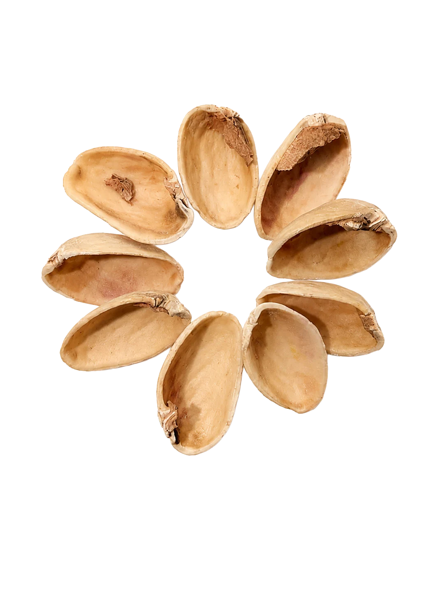

One waste stream.
Four surface directions.
Fine, medium, coarse, and mixed aggregate samples tested how much of the original shell remained visible. Whole shells create an open, recognizable texture; smaller fragments produce a denser surface. Each sample records its shell and binder quantities.

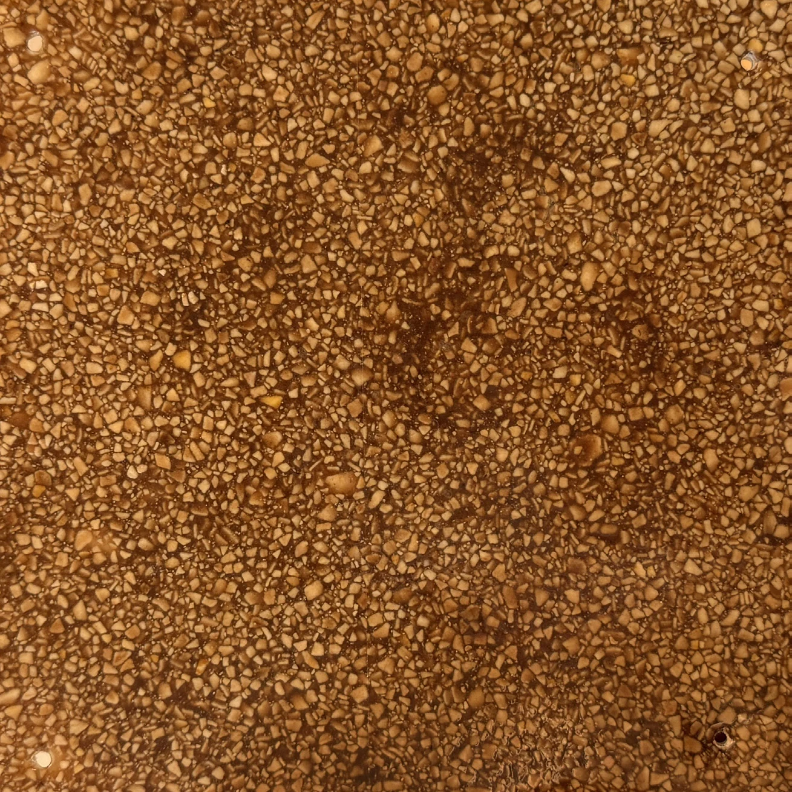
80 g shells / 30 g binder · 5.5 × 5.5 in.

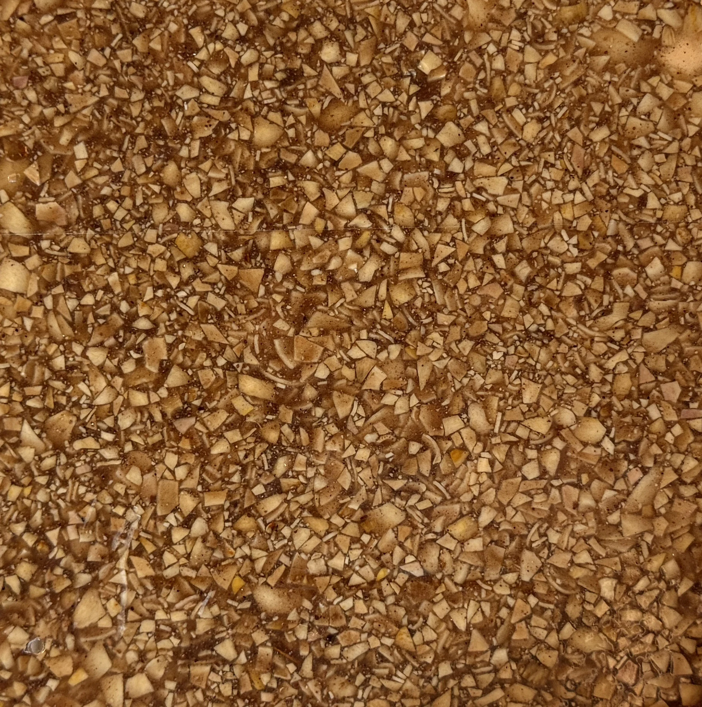
85 g shells / 45 g binder · 5.5 × 5.5 in.

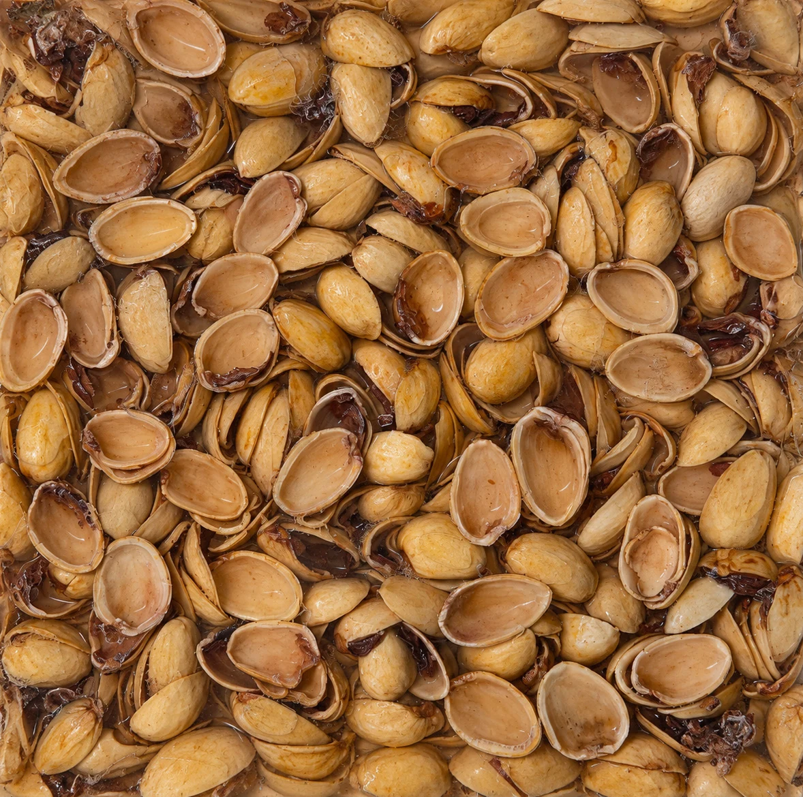
100 g shells / 40 g resin · 5.5 × 5.5 in.

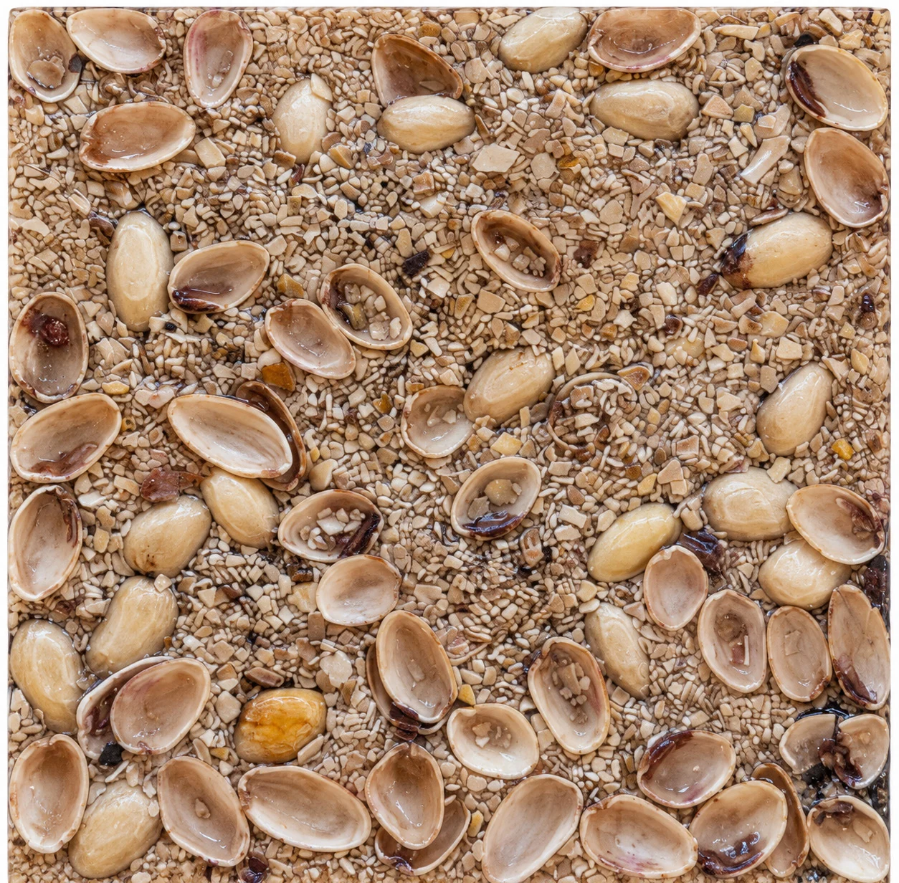
80 g blended shells + 40 g whole shells / 35 g binder.
Roast. Blend.
Cast. Refine.
Roasting approximately half of the collected shells introduced a darker tone. I combined roasted and unroasted material, crushed and blended it, then mixed the aggregate with resin before casting it into a mold.
The refined tile uses 90 g of shell mix and 30 g of resin in a 5.5-inch square. Variation in particle size and color became the defining quality of the surface.

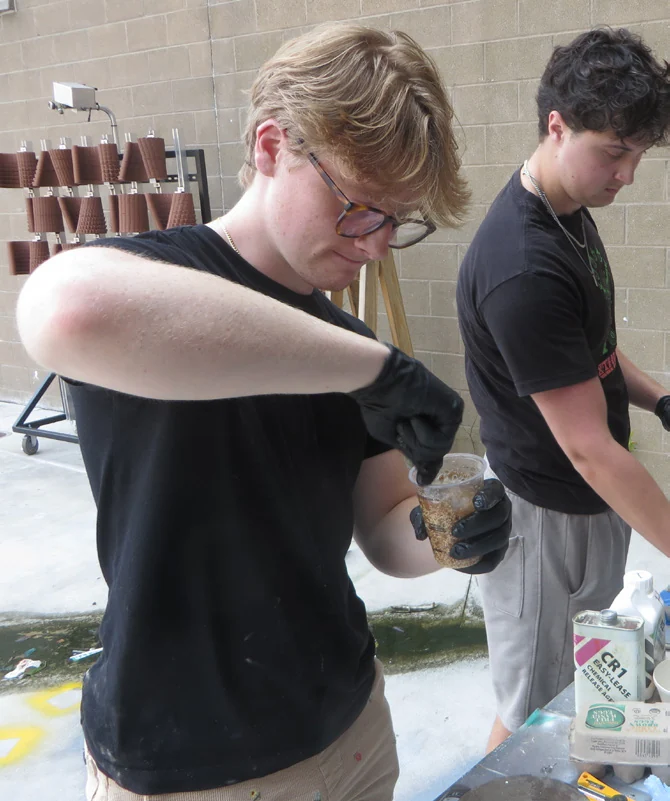

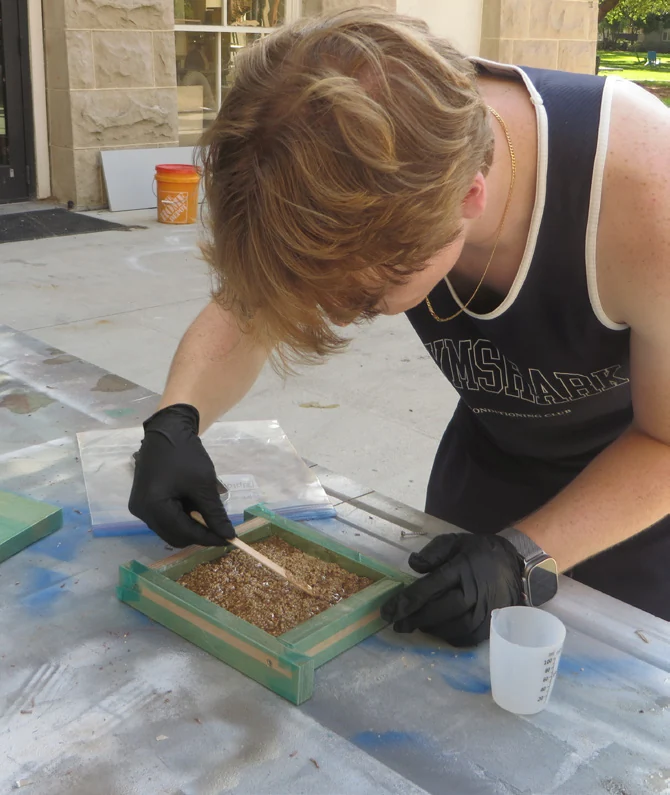

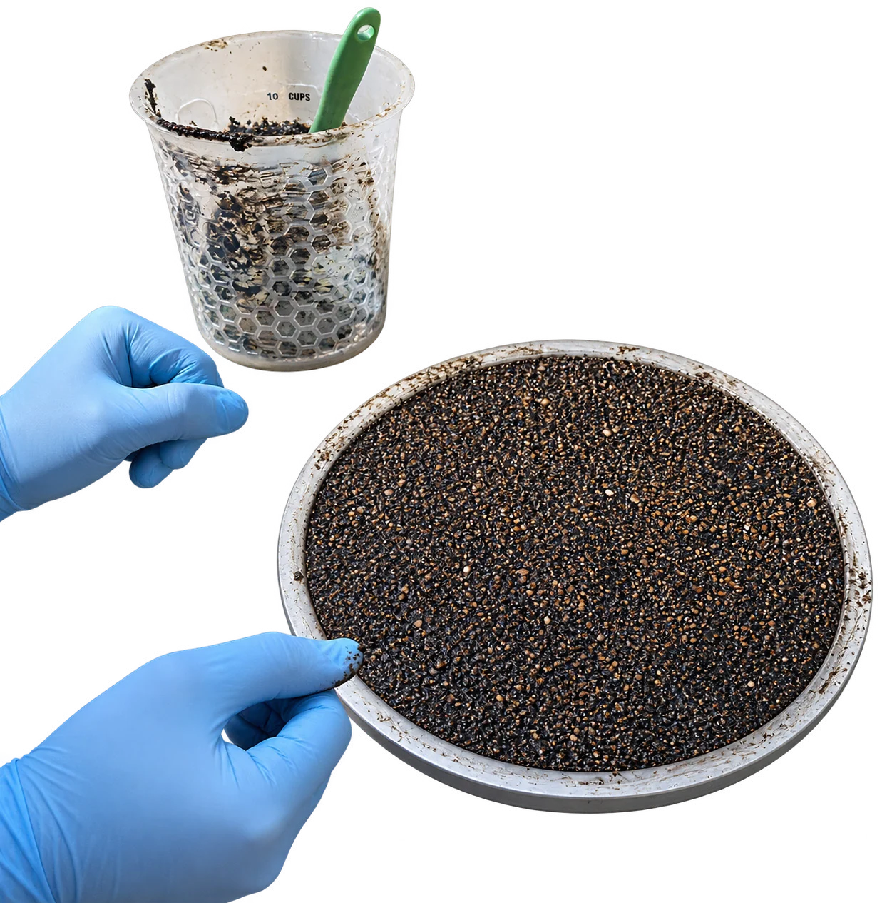
Beyond
a flat surface.
A cup and small dish extended the material study into hollow forms. A separate experiment used fine aggregate to cast a copy of a broken lawn-chair component, exploring repair as another possible application.

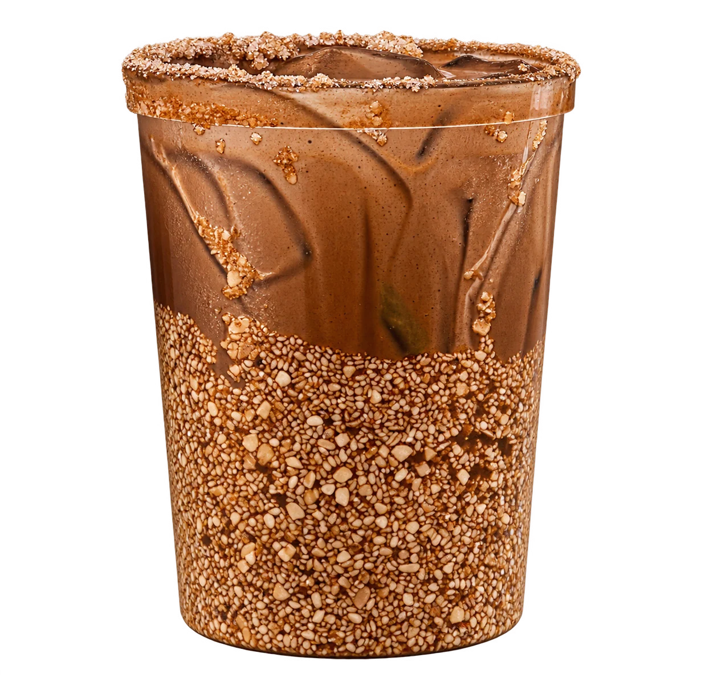

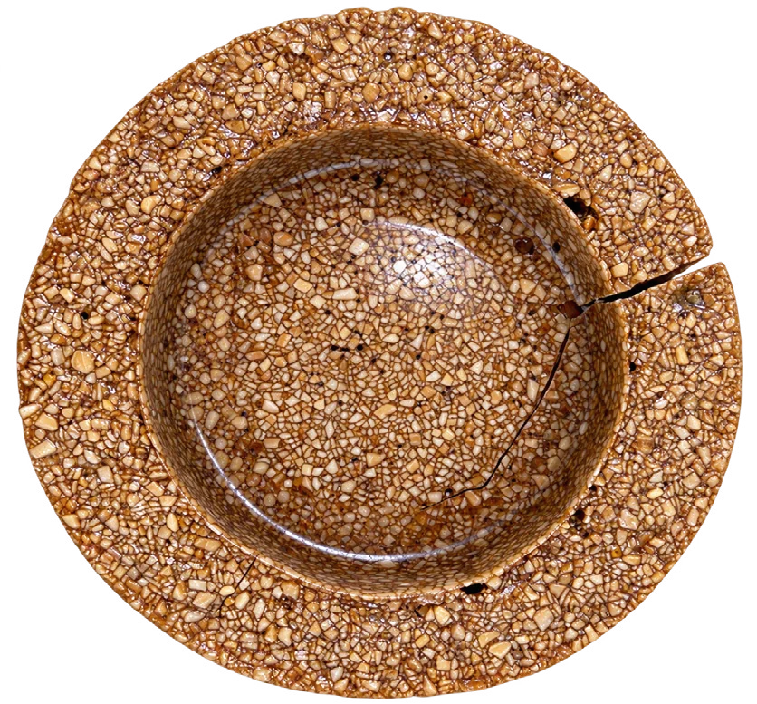

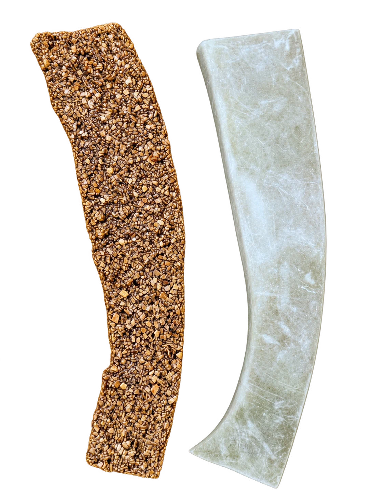
Material variation
as a design tool.
The final direction emphasizes a dark composite with lighter shell fragments, moving away from the immediate appearance of whole pistachio shells. The tray application study brings that surface into an object with a more detailed edge and profile.
Working across tiles, vessels, and a repair component showed how the same waste stream could support different visual directions. The next design decisions begin with the aggregate: its size, color, distribution, and relationship to the binder.